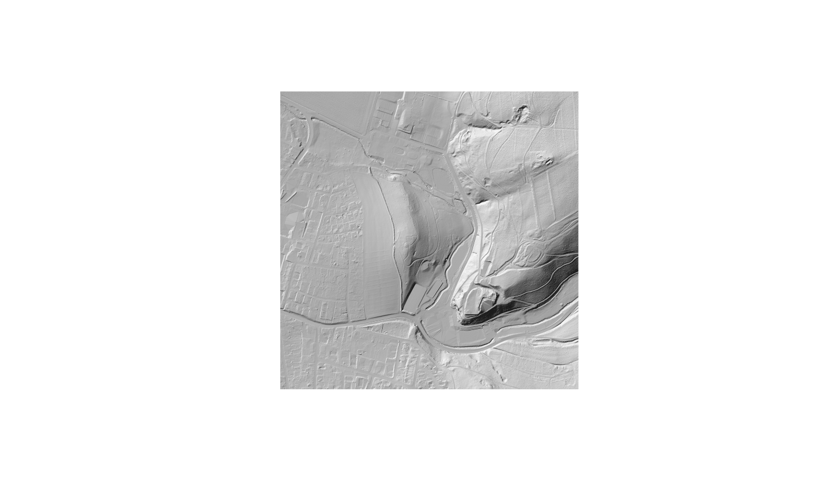
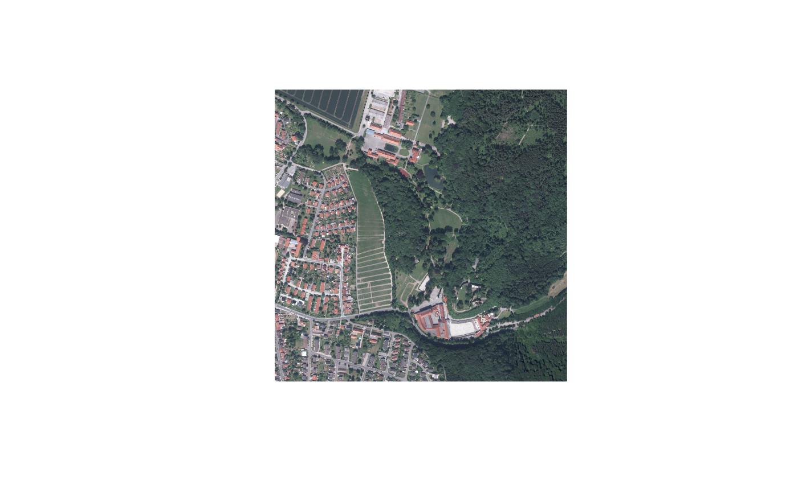

Terrain model, surface model or orthophoto for any location in Lower Saxony, from the state survey authority (LGLN), in any flight year it holds. Give a point to get the 1 km tile it lies in, an extent to get exactly that area, or a raster to get data on its grid.
Usage
rvt_data_lgln(
x,
product = c("dtm", "dsm", "rgb"),
year = NULL,
res = NULL,
download = FALSE,
max_mb = 500,
refresh = FALSE,
threads = rvt_threads()
)Arguments
- x
location: a WGS84
c(lon, lat)point orc(xmin, ymin, xmax, ymax)extent, an sf point, geometry or bbox, or the path to an EPSG:25832 raster- product
"dtm"(default),"dsm"or"rgb"- year
flight year, or
NULL(default) for the most recent that covers the whole area- res
output resolution in metres, or
NULL(default) for native- download
FALSE(default) returns a virtual raster reading the remote files on demand;TRUEstores a local copy in the user cache- max_mb
stop before reading if the estimated download exceeds this many megabytes (default 500)
- refresh
with
download = TRUE, fetch again even if cached- threads
C++ threads (see
rvt_threads())
Value
path to the raster (a VRT, or a Cloud-Optimized GeoTIFF with
download = TRUE), so it pipes into any function
Details
Nothing is downloaded by default. The result is a small virtual raster that
points at LGLN's published Cloud-Optimized GeoTIFFs, and data moves only when
something reads it - and only the parts that read needs. Pass it to any
function in this package. download = TRUE stores a local copy instead, for
offline work or repeated sessions.
| product | what | native grid | years |
"dtm" | DGM1 terrain model, the bare ground | 1 m, 1 km tiles | usually one |
"dsm" | DOM1 surface model, ground plus trees and buildings | 1 m, 1 km tiles | usually one |
"rgb" | DOP20 orthophoto | 0.2 m, 2 km tiles | several, e.g. 2013-2025 |
Everything comes in ETRS89 / UTM zone 32N (EPSG:25832), the data's own
coordinate system; locations are transformed to find the data, but the data
is never reprojected. rvt_data_lgln_years() lists which years exist for a
place without fetching any data.
Location
A point returns the 1 x 1 km tile containing it. Plain numbers
c(lon, lat)are WGS84; an sf point uses its own coordinate system, so EPSG:25832 coordinates work as an sf point.An extent returns exactly that area, snapped outward to whole cells: an
sf::st_bbox(), any sf geometry, or plain WGS84c(xmin, ymin, xmax, ymax).A raster path returns data on exactly that raster's grid, which must be EPSG:25832.
Resolution and download size
res = NULL keeps native resolution. A number resamples, cubic, onto a grid
of whole multiples of res, so products fetched for the same place at the
same res line up exactly and can go straight into rvt_blend().
Coarser requests read from the files' overviews, which cuts orthophoto
downloads roughly tenfold at 1 m. The terrain and surface files have no
overview coarser than 2 m, though, so even a 100 m request still reads
about 1 MB per km² - all of Lower Saxony would be around 50 GB. Before
anything is read, the download is estimated and the call stops above
max_mb. For large areas at coarse resolution, use a coarse elevation
source instead.
Years
year = NULL uses the most recent year that covers the whole area. Flights
in one year can be spread over several dates between neighbouring tiles, so
years are chosen, not dates; within a year each tile uses its latest flight.
Licence
LGLN open geodata, licensed CC BY 4.0 under section 7 of LGLN's terms of use. Credit them as © GeoBasis-DE/LGLN followed by the year you downloaded the data, and add ", Daten geändert" (data modified) for anything derived from them.
Examples
# \donttest{
pt <- c(9.9464, 51.6317) # Burg Hardenberg
rvt_data_lgln_years(pt, "rgb")
#> product year first_date last_date tiles covers
#> 1 rgb 2013 2013-06-18 2013-06-18 1 TRUE
#> 2 rgb 2016 2016-03-17 2016-03-17 1 TRUE
#> 3 rgb 2019 2019-04-01 2019-04-01 1 TRUE
#> 4 rgb 2022 2022-03-13 2022-03-13 1 TRUE
#> 5 rgb 2025 2025-03-08 2025-03-08 1 TRUE
rvt_data_lgln(pt, "dtm") |> rvt_hillshade() |> rvt_plot()
#> LGLN open data: © GeoBasis-DE/LGLN 2026, CC BY 4.0. Add ", Daten geändert" when you publish anything derived from it.

rvt_data_lgln(pt, "rgb", year = 2013, res = 1) |>
rvt_plot(minmax_def = c(0, 0, 0, 255, 255, 255))

# }